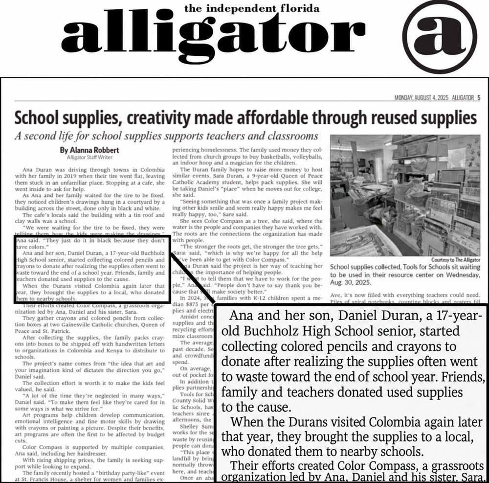

Where it started
It started with a trip to Colombia.
Growing up in the United States, and then visiting Colombia — my mother's home country — showed me two very different worlds. At home, crayons and colored pencils were ordinary. In the communities I visited, they were hard to come by.
What if the materials sitting unused here could become useful somewhere else?

As featured in The Independent Florida Alligator, August 2025.